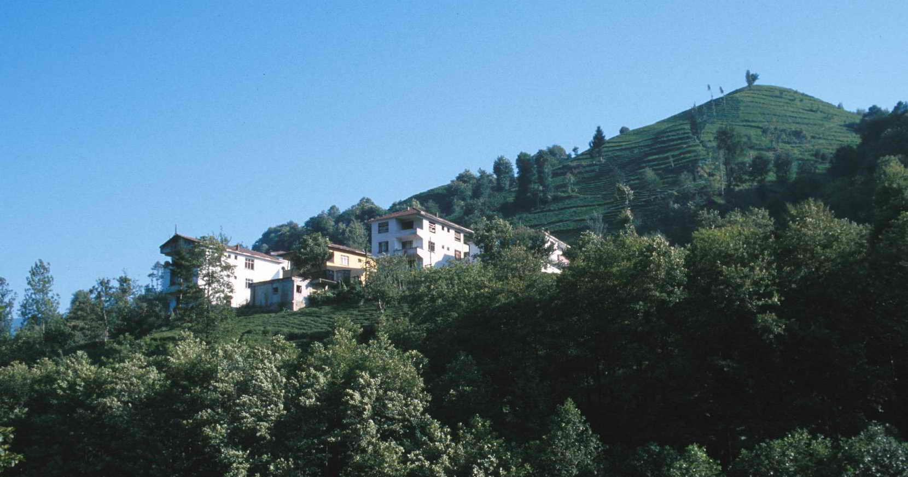

Osmanlı döneminde, 1878'de Rize'nin sancak merkezi olması ile nahiye olmuştur. Eski adı "Yedi Köy" anlamına gelen Kura-i Seba olan İkizdere, 19. yüzyıl sonlarında Trabzon vilayetinin Lazistan sancağındaki Rize kazasına bağlı bir nahiye merkeziydi. 15 Şubat 1916 tarihinde Rus işgaline uğrayan yöre, 11 Mart 1918 tarihinde işgalden kurtulmuştur. 1933 yılında İkizdere adını alan yerleşim, 1945'te ilçe olan Güneyce'ye bağlı bucak merkezi iken, ilçe merkezi 1952'de İkizdere’ye taşınmıştır.
Çamlık ve Cimil derelerinin birleştiği yerde kurulan İkizdere, adını bu derelerden almıştır. İlçe toprakları dağlıktır. Dağlar dar vadilerle parçalanmış olup yüksek kesimlerinde yaylalar bulunur. Bu yaylalar; Çağrankaya Yaylaları, Ovit Yaylası, Demirkapı Yaylası ile Şimşirli ve Ilıcaköy maden suyu kaynakları doğal güzelliklerinin başında gelmektedir.
Başlıca akarsuyu İkizdere’dir. İkizdere üzerinde elektrik üretmek gayesiyle bir santral kurulmuştur. Dağlar zengin ormanlarla kaplıdır. İlçe topraklarını İkizdere sulamaktadır. Rize Dağlarından kaynaklanan Çamlık ve Cimil Dereleri ile Karadere’nin birleşmesinden oluşan İkizdere, kuzeye doğru akar ve ilçe sınırları dışına çıkar. Dağların doruklarında buz yalakları ve buzul gölleri vardır.
Tipik Karadeniz iklimi hüküm sürmekte olan il, her mevsim yağışlıdır. Bitki örtüsü ormanlarla kaplı olup yüksek alanlarda iğne yapraklı ağaçlar, kızılağaç, gürgen, meşe, kestane, ladin, köknar ağaçlarından oluşan ormanlar bulunmaktadır.